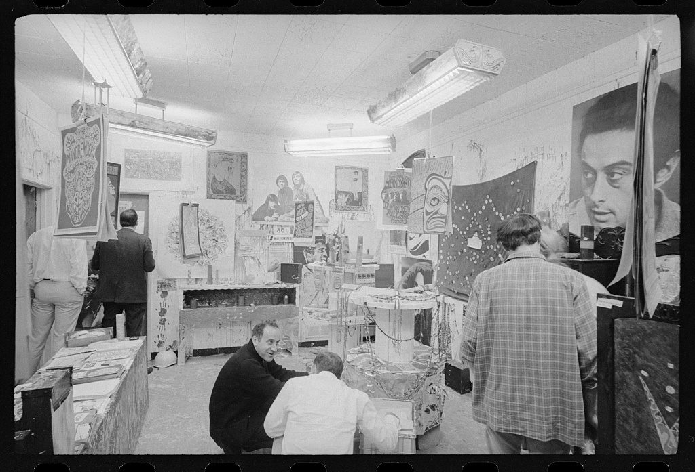

References / Photograph / 357
The Source, a psychedelic art store in Washington, D.C.
A 1967 news photograph of customers in a store that sold psychedelic posters and objects, showing how far the San Francisco style had spread within a year.
- Source
- Library of Congress: LC-U9-17308-5A
- Creator
- Marion S. Trikosko, U.S. News & World Report
- Made
- 21 April 1967
- Style
- Psychedelic art (agent-proposed, not yet reviewed by a person)
- Moods
- Countercultural, documentary
- Evidence
- Downloaded the Library of Congress service image (1024 × 697 px) and inspected it. The photograph is black and white, so it shows composition and lettering but not color.
- Reviewed
- Rights
- Open license, stored. License: public domain. Rights policy
Context
The Library of Congress titles it “Customers at ‘The Source,’ a psychedelic art store with rock posters and other images on the walls, 2151 K St., N.W. Washington, D.C.”. The job log caption reads “Hippies and Teenie-Boppers”. It is part of the U.S. News & World Report Magazine Photograph Collection. LoC.
Wikipedia notes that the San Francisco posters were torn down as soon as they went up and were soon reprinted for sale, with poster shops opening locally and nationwide. Wikipedia: Wes Wilson.
Observed
- A low room with fluorescent ceiling lights. Posters, prints, and hangings cover the walls.
- At upper left hangs a vertical poster with a large central medallion and hand-drawn lettering.
- Further back, a poster with a large stylized face and wavy lettering hangs near a dark cloth decorated with dots.
- A large photographic poster of a man’s face fills the upper right.
- Customers browse. Two men crouch at a display in the center, and a table of flat prints stands at left.
Why it belongs
The photograph shows the posters as retail goods on the East Coast only months after the first Fillmore and Avalon posters, which supports the account that the style spread through poster sales as much as through concerts.
Measured
Machine-extracted by tools/image-traits.py on . Full measurement.
- Mean chroma
- 0
- Palette
- #adadad 20%
- #c4c4c4 20%
- #0e0e0e 11%
- #a0a0a0 7%
- #878787 7%
- #757575 6%
- #d5d5d5 4%
- #b9b9b9 4%

